What helps
Documents, contracts, rulings, official letters, audio, video, photos, chats, payment records. Anything that goes with your account and backs it up. With that, we can start working from day one.
Case files / Power / Corruption
What power wanted buried: secret arbitration awards, bribery schemes, prisons, customs, chats and bank statements. 37 complete case files, with their evidence, their videos and what happened next.
Four governments across the political spectrum. Each investigation is a different object on the table: a folder, a receipt, a phone, a sign-in sheet. Pick one up.
Documents, evidence and connections. Each case is a different object: open it and see how it was proven.
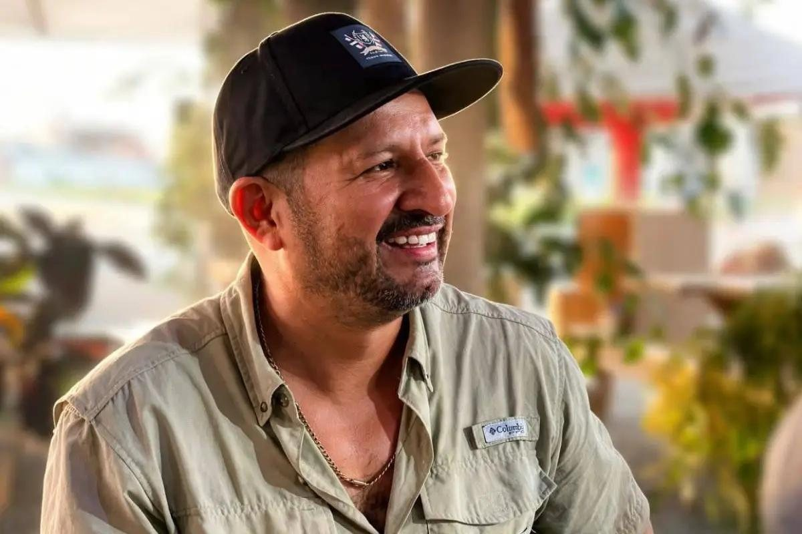
What Leonardo Toledo left behind in case he was killed
Leonardo Toledo left Boscán & La Moni four videos and two audio recordings to open if he was killed. He was ambushed on October 27, 2026. In them, the mayor of Naranjal, Juan Carlos Rivera, admits that he is not the one in charge of his municipality and that his officials have guns put to their heads. Five hours after the broadcast, ADN withdrew its support for him.
Case 001Read the full case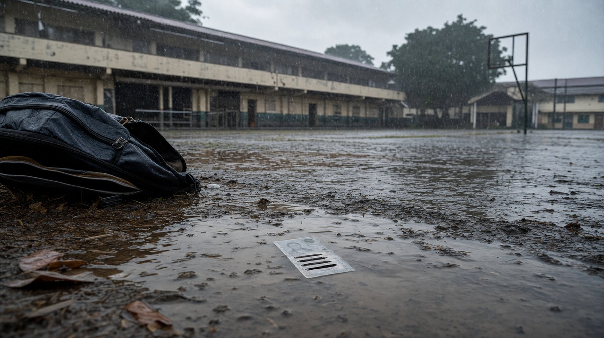
A chokehold, threats using his ID card and a principal who asked for silence
A sergeant at the Miguel Iturralde Military School in Portoviejo put a 17-year-old student in a chokehold and forced him into the mud. When the boy's mother filed a complaint, the principal asked her to keep quiet, and death threats arrived along with a copy of an ID card that only the school had. After publication, Ochoa and the principal left their posts, and the National Assembly and two ministries opened investigations.
Case 002Read the full case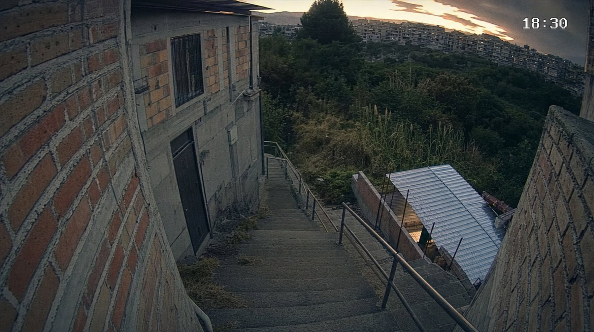
An hour and twenty minutes to a ravine in La Vicentina, and a case file full of contradictions
A 20-year-old student left the National Polytechnic School alone, walked for more than an hour on a swelling ankle and was found five days later in a ravine in La Vicentina. Boscán & La Moni reconstructed her route and exposed the bag that was not in the ravine, the phone opened without a chain of custody and the 48 hours that passed without a missing-person report.
Case 003Read the full case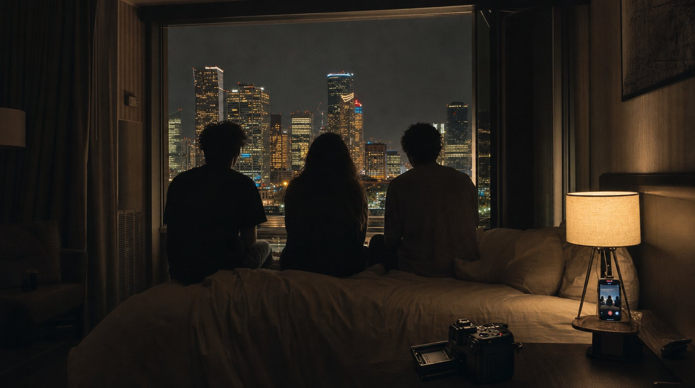
The Progen case evidence the prosecutor locked in a drawer
Three CELEC technicians recorded a proof-of-life test in Houston and secretly recorded their bosses while inspecting Progen's generators. They handed everything to the Attorney General's Office, which charged them and left the evidence out of the case file until Boscán & La Moni published it.
Case 004Read the full case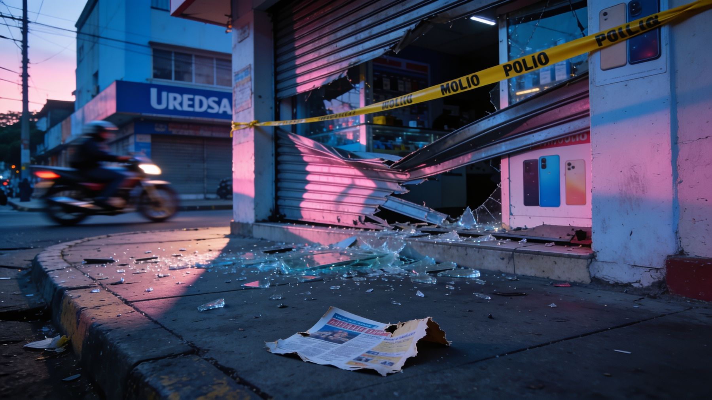
The model, the number two of Los Lagartos and the cartel's police officers
A bomb at a television host's business opened the door to the Los Lagartos organization: Connie Garcés, a model and Guayaquil TV personality, was the partner of Pedro Sánchez, the number two to alias Marino. Then came the names behind Marino's murder and the photos of the police officers who reported to a drug trafficker.
Case 005Read the full caseThe Serbian who named names: the cooperation agreement the Attorney General's Office keeps under seal
The life of the Serbian drug trafficker whose case brought down Mario Godoy: 513 kilos in 2014, free in 2018, translator for a hitman in Vienna and back in prison over his Sky chats. Cornered, he signed a cooperation agreement naming politicians and cash for campaigns.
Case 006Read the full case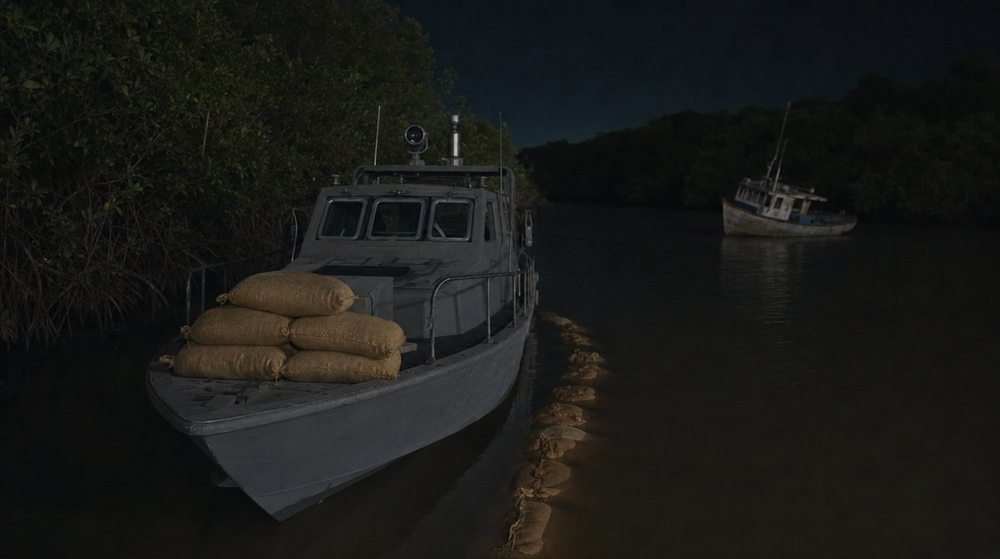
The seizure that was a robbery
Sailors who staged a seizure to steal drugs from a cartel and resell them: five sacks in the official report, eighteen in the water. The Navy admitted the staging and sought the maximum penalty against the commander who led it.
Case 007Read the full case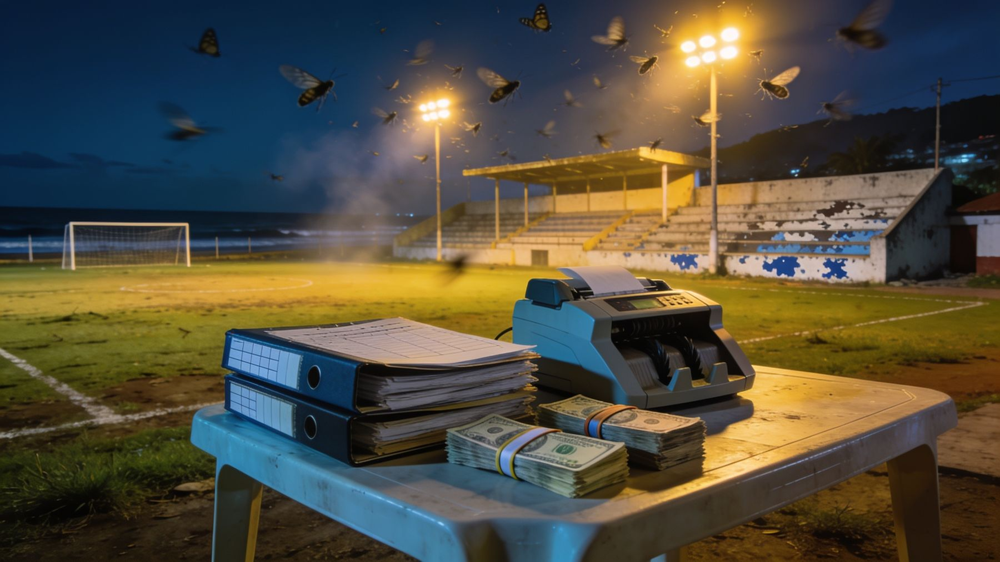
How money is laundered on Ecuador's soccer fields
Hundreds of accounting files from a second-division club show two payrolls: one through the bank at 460 dollars and a real one of 2,500, paid in cash. Its president is Héctor Pesantes, convicted of laundering money for the Gjika network.
Case 008Read the full case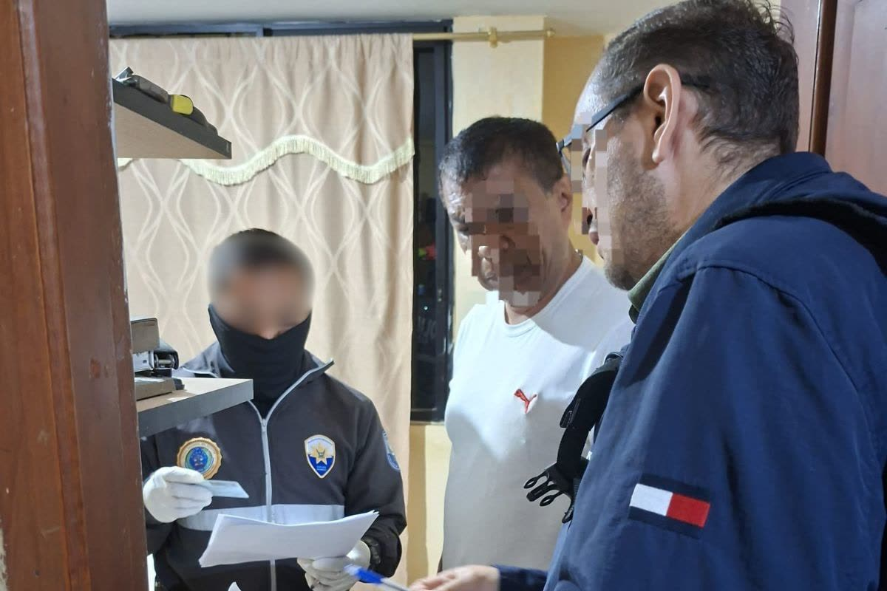
What we reported in January; on October 30 they raided his home
In January, pulling the Mocolí thread, Boscán and La Moni showed that the mayor of Playas, Gabriel Balladares, had awarded millions in contracts to his partner's family, and that her stepfather was a business partner of alias Boris, the drug czar of Los Choneros, who was caught holding checks from that same company. On October 30, 2026, prosecutors raided the mayor's home.
Case 009Read the full case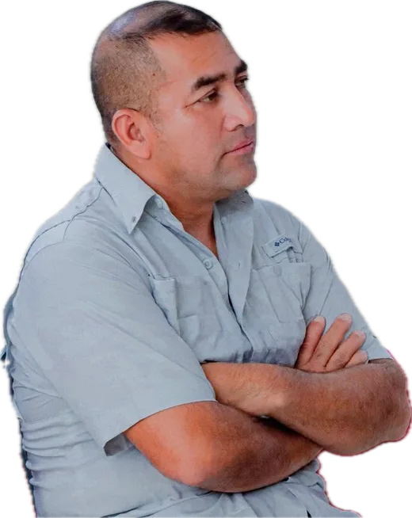
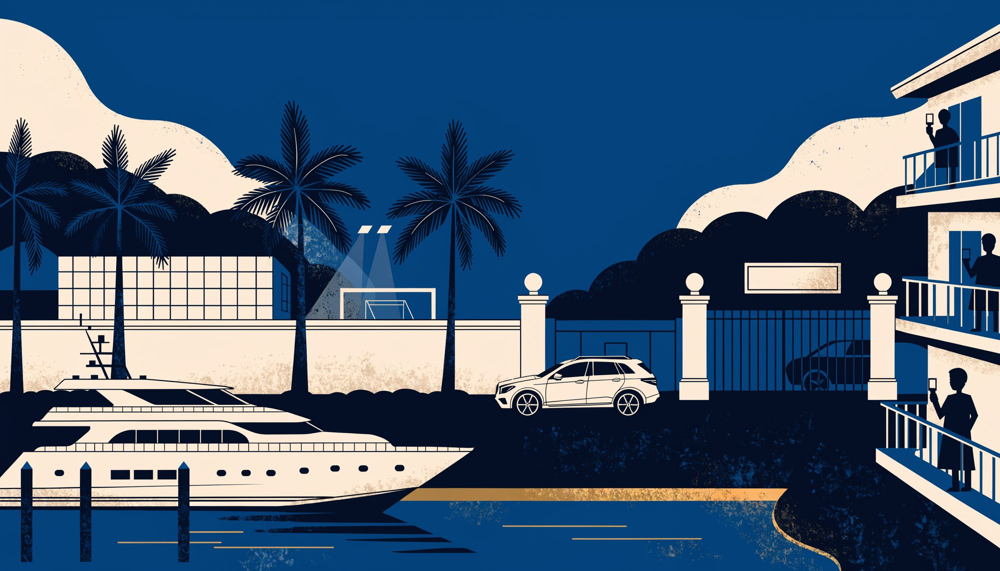
Micaela Morales, Wendy Landa, Bryan Soria and the money of Marino's inner circle
The finances of the young people linked to the circle of alias Marino, the Los Lagartos leader murdered in Mocolí: Micaela Morales, Wendy Landa, Bryan Soria and Andrés Vélez. Cards, trips, handbags and apartments that match no declared income, according to data from the UAFE, the SRI and the banks.
Case 010Read the full case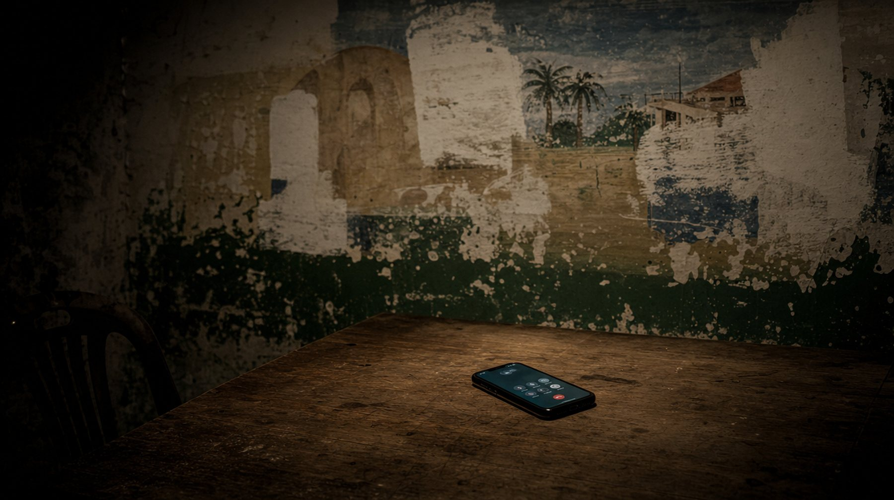
The leader of Los Tiguerones explains how he made deals with the government and the police
The alleged leader of Los Tiguerones, free in Spain after a failed extradition, describes in a phone call deals with the previous government to bring down weekend killings, and a police force he offers to help control the streets. He says Commander Tannya Varela got along well with Fito and with Junior Roldán.
Case 011Read the full case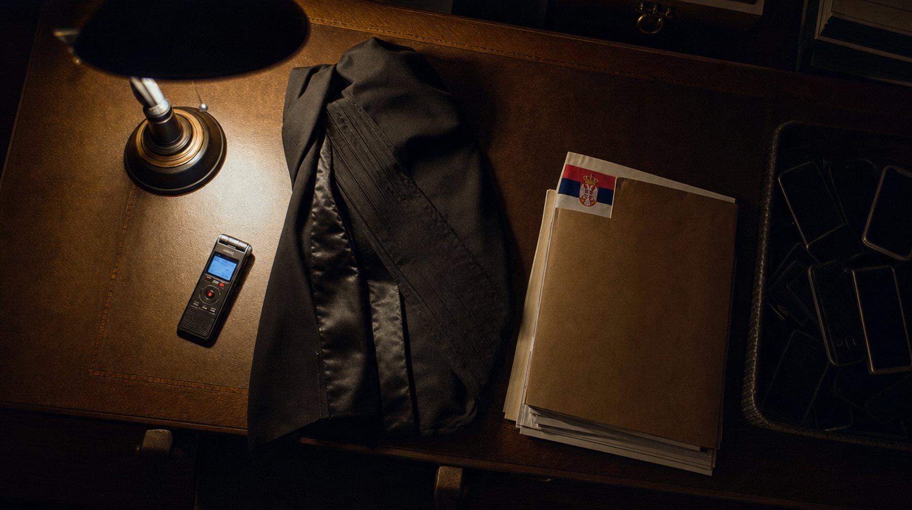
The recordings that proved the Judiciary Council was applying pressure in favor of drug trafficking
The recordings in which the right-hand man of the president of the Judiciary Council asks an anti-corruption judge to pay "attention to the defense" of a Serbian drug trafficker who had been a client of Godoy's wife. Sixty-four days later, the National Assembly censured and removed him, 148 votes to none.
Case 012Read the full case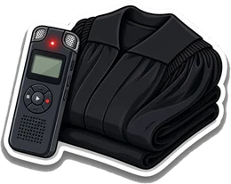
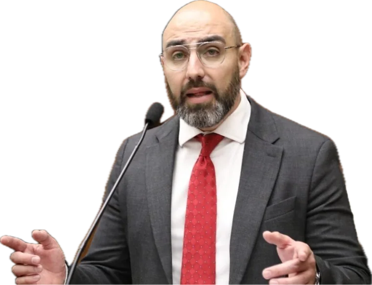
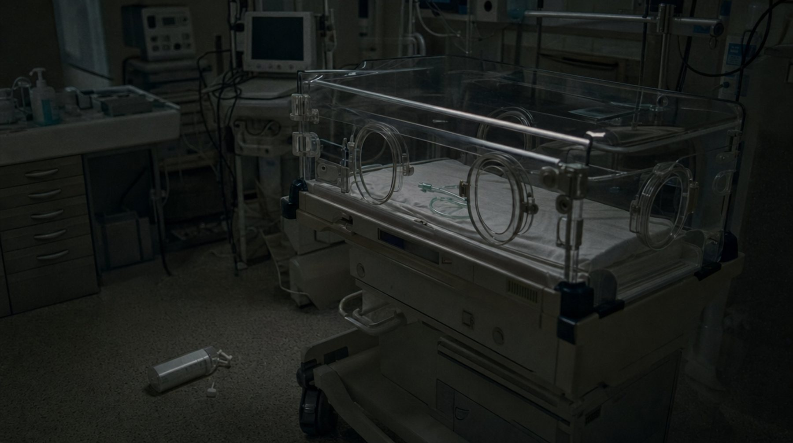
Twelve deaths acknowledged, eighteen reported and a bacterium in the neonatal ward
Andersson Boscán reported that 18 newborns had died at the Hospital Universitario in Guayaquil with reused cannulas. The hospital denied it, and a day later the ministry acknowledged 12 deaths, two from the KPC bacterium. The manager was fired, the regional coordinator removed, and the Attorney General's Office and the National Assembly opened investigations.
Case 013Read the full case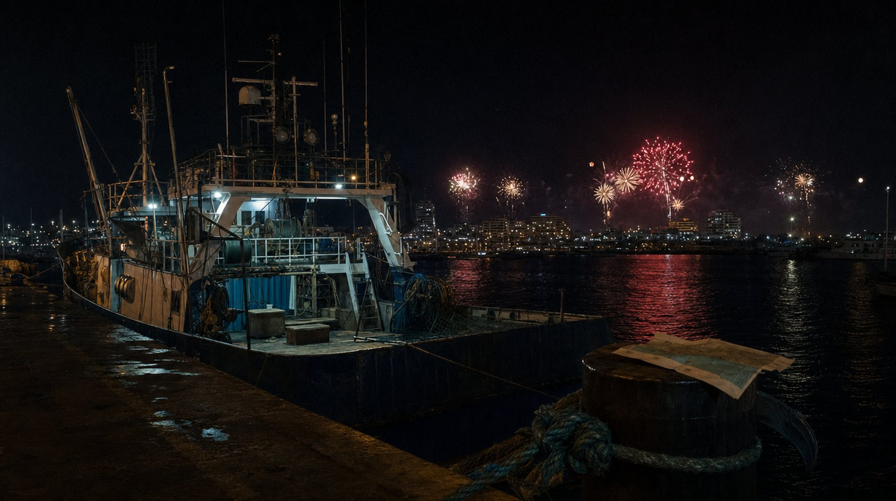
Six dead, a port and the ship nobody seizes
Leo Briones went from hauling cocaine with his own hands to controlling the port of Manta with police officers, soldiers and prosecutors on his payroll, until men in military uniforms ambushed him and his wife in July 2025. Within six months his brother, his 16-year-old son and his business partner were killed. No one has been charged, and the ship over which the boy was lured is still registered to the same company.
Case 014Read the full case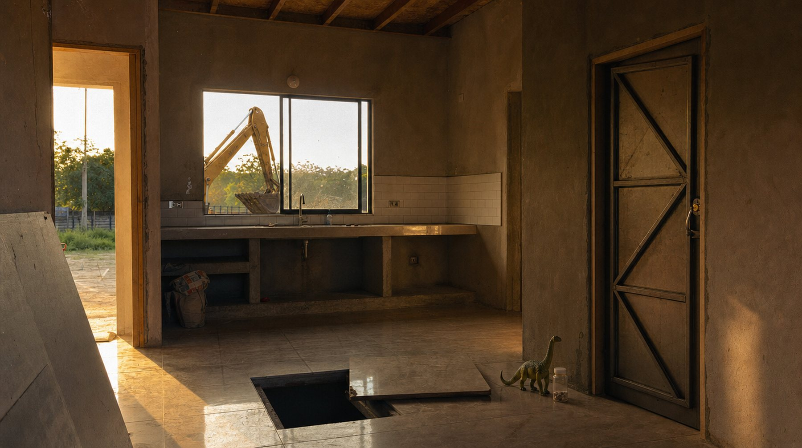
The bunker, the letter, the video call and the plane to Brooklyn
The recapture of alias Fito in a bunker in Monterrey, between Manta and Montecristi, told with what the government took a week to admit: three rejected negotiation channels, a twenty-minute video call with the interior minister and a letter to Colombia's ambassador. Exclusive photos of the house, the hidden stash with four Rolex watches, the plane to Brooklyn, the hitman who called from Mexico and the brothers who fell in 2026.
Case 015Read the full case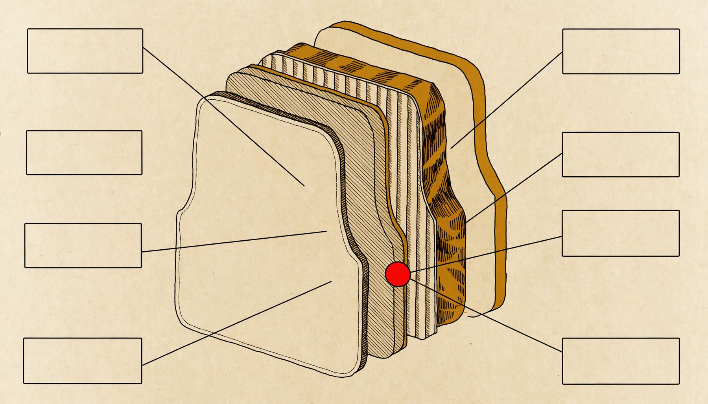
The Loffredo purchase the Attorney General's Office ended up investigating
The vests and helmets bought for the Armed Forces that, according to the Army's own document, offer no protection. The supplier had been declared in breach by the state.
Case 016Read the full case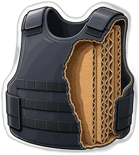
What Fernando Villavicencio's phone held
9,000 chats and 68 gigabytes verified over a month: the prosecutor, the operator who paid every month, the judges and the threats.
Case 017Read the full case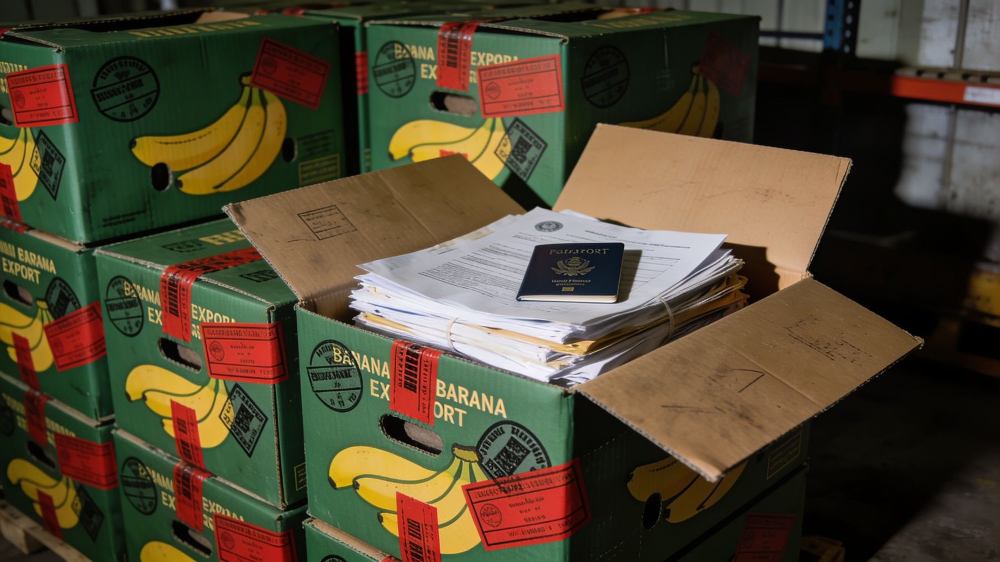
The cartel's legal businesses and the Attorney General's Office that did nothing
71 of Dritan Gjika's companies were still active a year and seven months after El Gran Padrino: no one was prosecuting them or freezing their assets. A raid with advance warning, a liquidator who sold to his daughter and an Attorney General's Office that did nothing.
Case 018Read the full case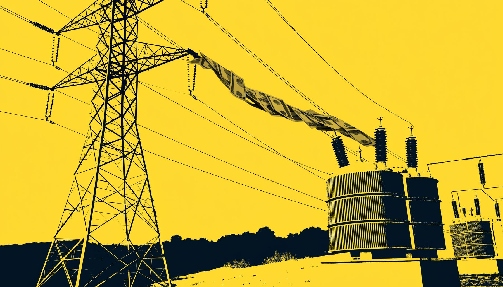
The Energy Minister's recordings
A 150,000-dollar threat, the recording of the Petroecuador manager and a minister who resigned within five days. Acquitted in 2026.
Case 020Read the full case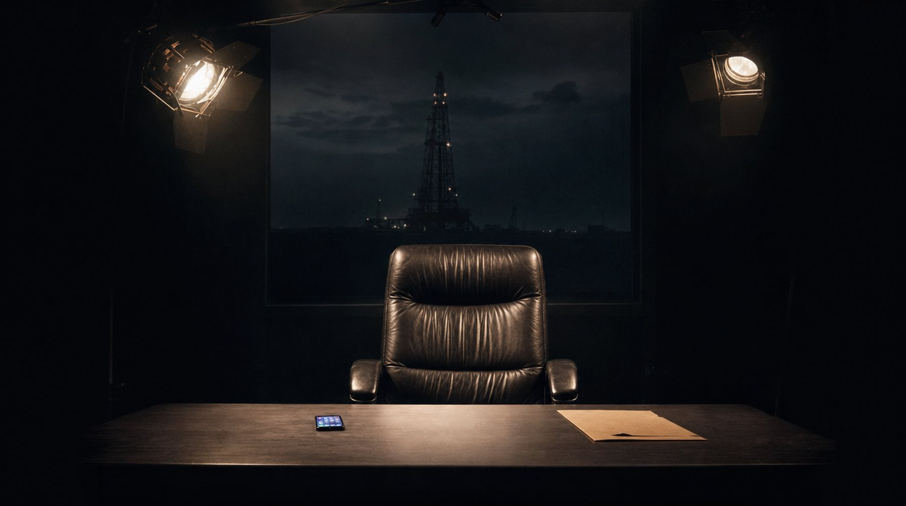
The Petroecuador manager who admitted on air that his wife had influence
The general manager of Petroecuador sat down on Café La Posta to answer for the recordings, chats and intelligence report showing his wife recommending candidates and steering contracts. On air, he acknowledged that she had influence over his job and that he had confessed it to Lasso in a private meeting. That night, Lasso asked the board to dismiss him, and he resigned the next day.
Case 021Read the full caseThe sale of customs posts
Three million for the post that decides which container gets opened. The case file, Pozo's hand and the hearing before the National Assembly.
Case 022Read the full caseCouncil members, pressured judges and a request made in the president's name
A witness recorded Judiciary Council members Juan José Morillo and Maribel Barreno in the office of the president of the Pichincha Provincial Court, asking him, in President Lasso's name, to support Guadalupe Llori's case. La Posta published it on June 15, 2022. Fifteen months later, the Attorney General's Office brought influence-peddling charges and a judge ordered pretrial detention for Barreno.
Case 023Read the full case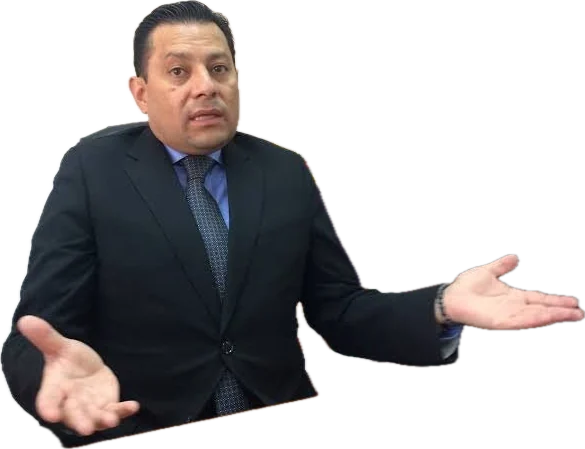
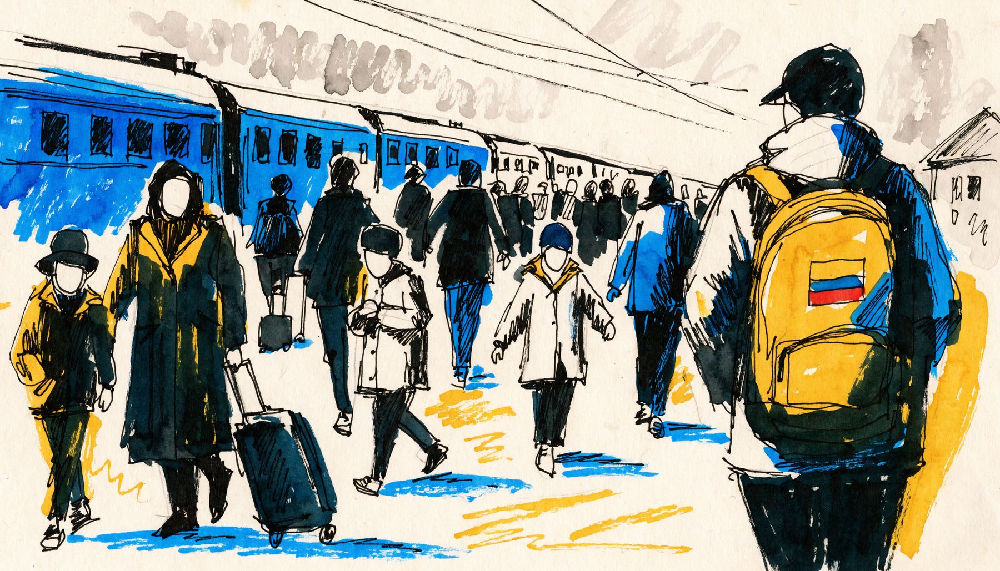
Special coverage from the war
Reporting from Ukrainian territory during the Russian invasion.
Case 024Read the full caseThe generals who shut down León de Troya and the commander the drug traffickers called the godmother
Generals Ponce and Vargas were heard on tape ordering the closure of León de Troya, the investigation that placed the president's brother-in-law alongside the Albanian mafia, and Commander Tannya Varela said Lasso had already spoken with his brother-in-law. The drug traffickers called her the godmother. Four years after entering Carondelet without being logged, she was arrested along with the police officers who had investigated.
Case 025Read the full case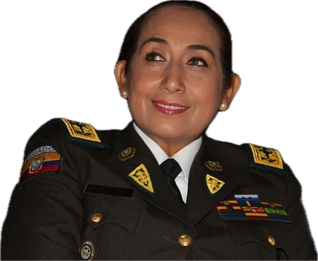
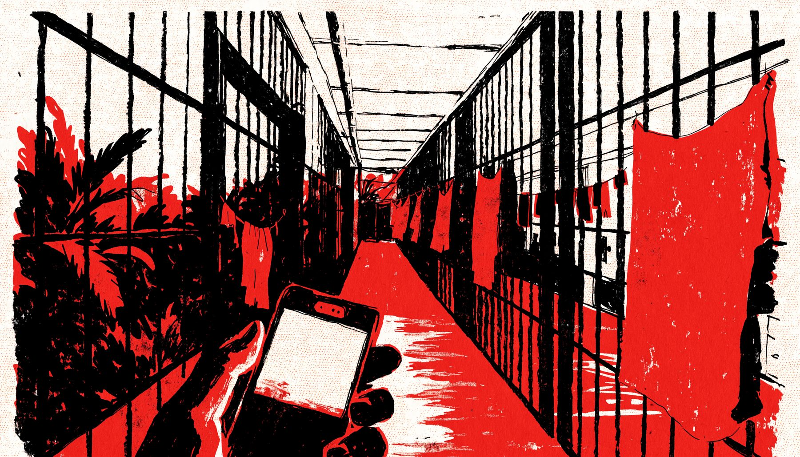
The first time anyone entered the cellblocks without state custody
Four documentaries from inside the prisons and gang territories. The series that preceded the peace talks between the state, the Church and armed groups, and the first death threats.
Case 026Read the full caseWho jumped the vaccine line
The list of people who jumped the COVID vaccine line in January 2021 thanks to their political connections. The health minister resigned and left the country.
Case 027Read the full case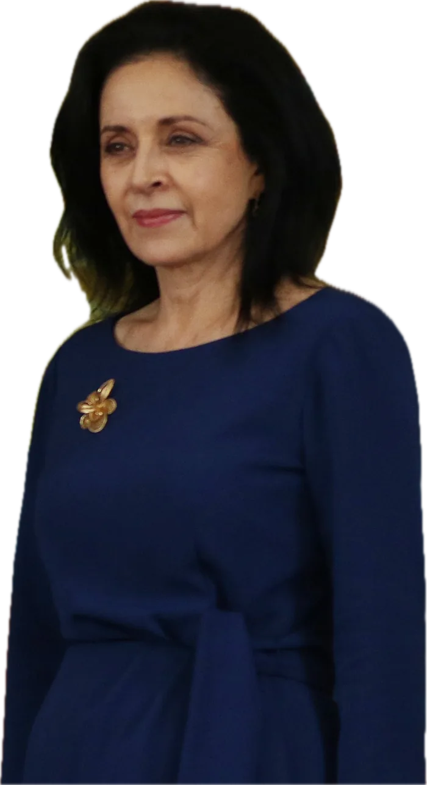
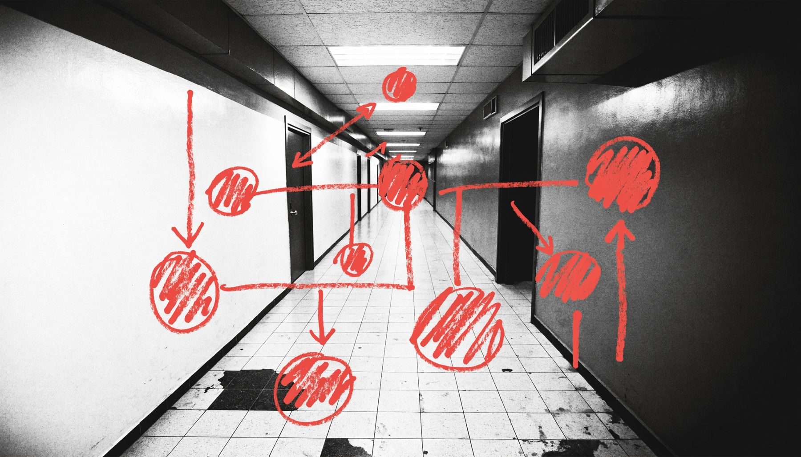
Public hospitals in exchange for votes in the National Assembly
Public hospitals handed to assembly members in exchange for votes at the height of the pandemic. The government minister was censured and removed with 104 votes.
Case 028Read the full case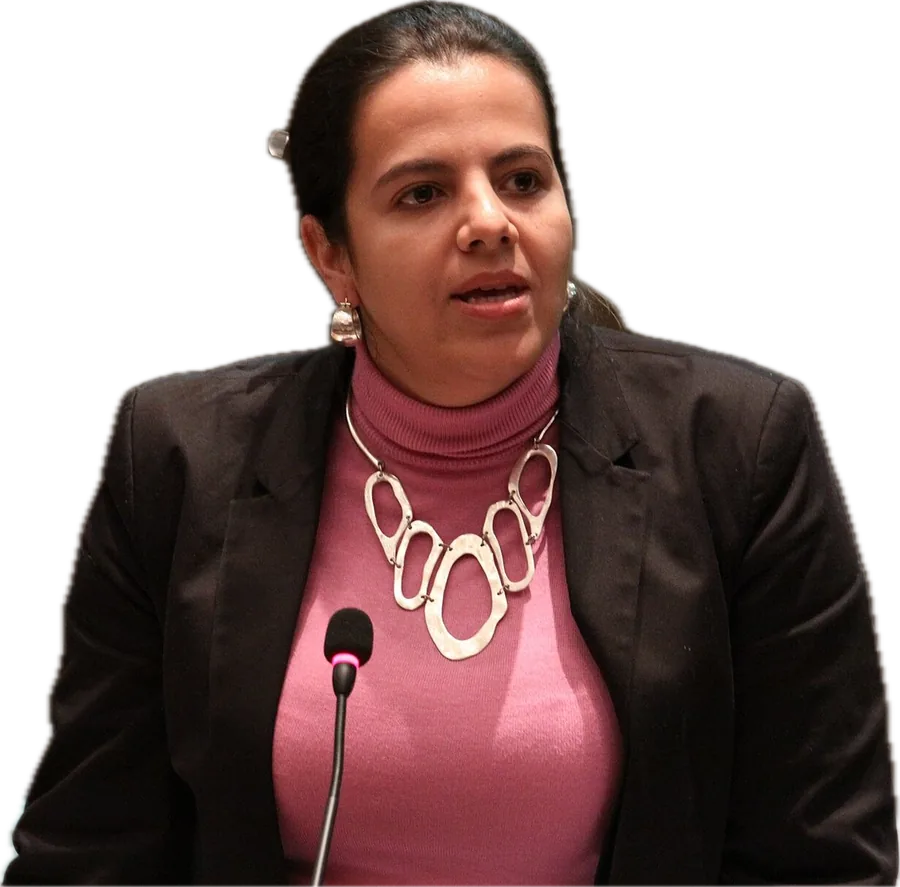
Public money in the 2018 Yes campaign
Money from state companies that paid for the Yes campaign in the 2018 referendum. The Oversight Committee opened an investigation based on the report.
Case 029Read the full case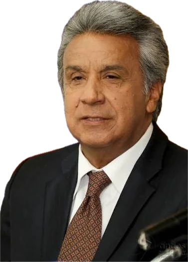

The contracts of the Guayas prefect's family
Face masks at 6.71, shell companies with the same accountant, a family offshore and a prefect who died 19 days after the raid.
Case 030Read the full case
The leak of Odebrecht's bribes across Latin America
More than 13,000 documents from Odebrecht's bribery department, handed over in Quito and reported with the International Consortium of Investigative Journalists and 18 media outlets across the Americas.
Case 031Read the full caseFaulty HIV tests and rotten purchases at the Health Ministry
Four reports and an interview with the source about the HIV tests and the Health Ministry's purchases. Minister Verónica Espinosa was censured by the National Assembly.
Case 032Read the full case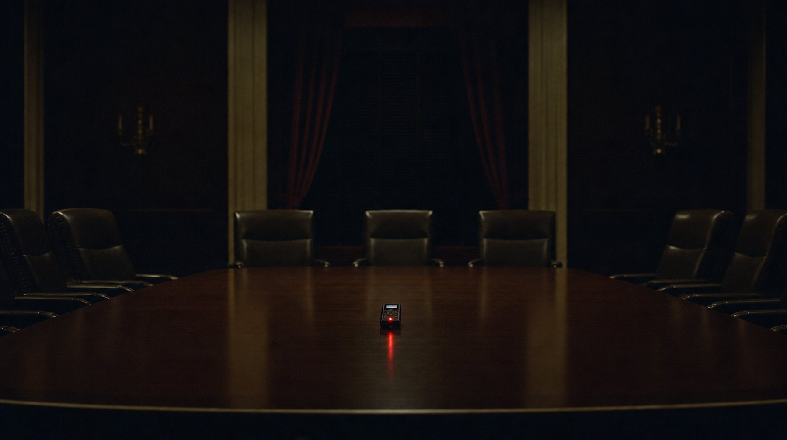
The 45 seconds of the COSEPE meeting that contradicted the president during the kidnapping of three journalists
La Posta published 45 seconds recorded inside a meeting of the Public and State Security Council during the kidnapping of three El Comercio journalists: Lenín Moreno said a state's sovereignty went beyond one or a few lives, while the families were being told about a prisoner exchange. The full declassification he promised on April 13, 2018, never came; in 2025 he admitted that military and police officials blocked it.
Case 033Read the full caseKickbacks in the National Assembly
The recording in which an assembly member explains how to collect ten percent of her advisers' salaries. Removal from office and conviction.
Case 034Read the full case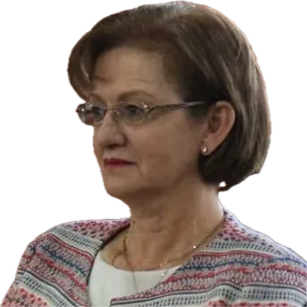
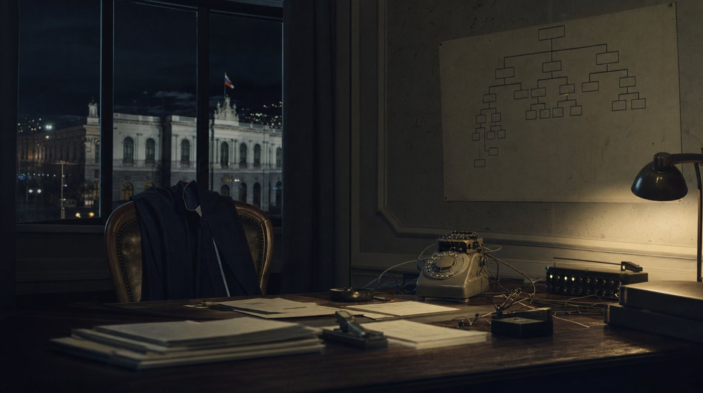
The leadership of Rommy Vallejo's Senain, name by name
Agents from the presidency's internal security handed La Posta the inner workings of Rommy Vallejo's Senain: doctored classified expenses, a troll center, wiretaps with seven interceptors that disappeared, phishing against opponents and Yasunidos, shock groups paid by the day and two agents planted in Lenín Moreno's security detail. Moreno removed the infiltrator; the rest of the scheme went unpunished.
Case 035Read the full case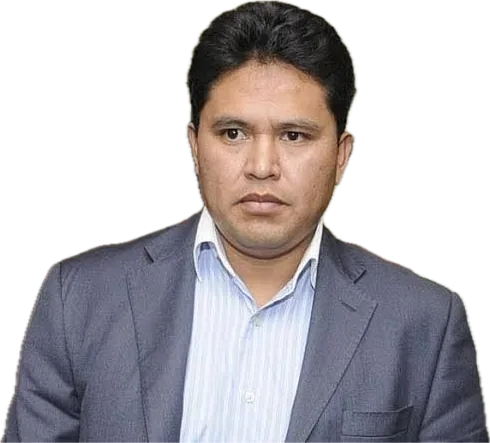
Each yellow note says what the investigation led to.
Removals, censures, convictions, prosecutorial investigations, changes in the law. Pick an outcome to browse the archive.
Leonardo Toledo left Boscán & La Moni four videos and two audio recordings to open if he was killed. He was ambushed on October 27, 2026. In them, the mayor of Naranjal, Juan Carlos Rivera, admits that he is not the one in charge of his municipality and that his officials have guns put to their heads. Five hours after the broadcast, ADN withdrew its support for him.
A sergeant at the Miguel Iturralde Military School in Portoviejo put a 17-year-old student in a chokehold and forced him into the mud. When the boy's mother filed a complaint, the principal asked her to keep quiet, and death threats arrived along with a copy of an ID card that only the school had. After publication, Ochoa and the principal left their posts, and the National Assembly and two ministries opened investigations.
A 20-year-old student left the National Polytechnic School alone, walked for more than an hour on a swelling ankle and was found five days later in a ravine in La Vicentina. Boscán & La Moni reconstructed her route and exposed the bag that was not in the ravine, the phone opened without a chain of custody and the 48 hours that passed without a missing-person report.
Three CELEC technicians recorded a proof-of-life test in Houston and secretly recorded their bosses while inspecting Progen's generators. They handed everything to the Attorney General's Office, which charged them and left the evidence out of the case file until Boscán & La Moni published it.
A bomb at a television host's business opened the door to the Los Lagartos organization: Connie Garcés, a model and Guayaquil TV personality, was the partner of Pedro Sánchez, the number two to alias Marino. Then came the names behind Marino's murder and the photos of the police officers who reported to a drug trafficker.
The life of the Serbian drug trafficker whose case brought down Mario Godoy: 513 kilos in 2014, free in 2018, translator for a hitman in Vienna and back in prison over his Sky chats. Cornered, he signed a cooperation agreement naming politicians and cash for campaigns.
Sailors who staged a seizure to steal drugs from a cartel and resell them: five sacks in the official report, eighteen in the water. The Navy admitted the staging and sought the maximum penalty against the commander who led it.
Hundreds of accounting files from a second-division club show two payrolls: one through the bank at 460 dollars and a real one of 2,500, paid in cash. Its president is Héctor Pesantes, convicted of laundering money for the Gjika network.
In January, pulling the Mocolí thread, Boscán and La Moni showed that the mayor of Playas, Gabriel Balladares, had awarded millions in contracts to his partner's family, and that her stepfather was a business partner of alias Boris, the drug czar of Los Choneros, who was caught holding checks from that same company. On October 30, 2026, prosecutors raided the mayor's home.
The finances of the young people linked to the circle of alias Marino, the Los Lagartos leader murdered in Mocolí: Micaela Morales, Wendy Landa, Bryan Soria and Andrés Vélez. Cards, trips, handbags and apartments that match no declared income, according to data from the UAFE, the SRI and the banks.
The alleged leader of Los Tiguerones, free in Spain after a failed extradition, describes in a phone call deals with the previous government to bring down weekend killings, and a police force he offers to help control the streets. He says Commander Tannya Varela got along well with Fito and with Junior Roldán.
The recordings in which the right-hand man of the president of the Judiciary Council asks an anti-corruption judge to pay "attention to the defense" of a Serbian drug trafficker who had been a client of Godoy's wife. Sixty-four days later, the National Assembly censured and removed him, 148 votes to none.
Andersson Boscán reported that 18 newborns had died at the Hospital Universitario in Guayaquil with reused cannulas. The hospital denied it, and a day later the ministry acknowledged 12 deaths, two from the KPC bacterium. The manager was fired, the regional coordinator removed, and the Attorney General's Office and the National Assembly opened investigations.
Leo Briones went from hauling cocaine with his own hands to controlling the port of Manta with police officers, soldiers and prosecutors on his payroll, until men in military uniforms ambushed him and his wife in July 2025. Within six months his brother, his 16-year-old son and his business partner were killed. No one has been charged, and the ship over which the boy was lured is still registered to the same company.
The recapture of alias Fito in a bunker in Monterrey, between Manta and Montecristi, told with what the government took a week to admit: three rejected negotiation channels, a twenty-minute video call with the interior minister and a letter to Colombia's ambassador. Exclusive photos of the house, the hidden stash with four Rolex watches, the plane to Brooklyn, the hitman who called from Mexico and the brothers who fell in 2026.
The vests and helmets bought for the Armed Forces that, according to the Army's own document, offer no protection. The supplier had been declared in breach by the state.
9,000 chats and 68 gigabytes verified over a month: the prosecutor, the operator who paid every month, the judges and the threats.
71 of Dritan Gjika's companies were still active a year and seven months after El Gran Padrino: no one was prosecuting them or freezing their assets. A raid with advance warning, a liquidator who sold to his daughter and an Attorney General's Office that did nothing.
The president's brother-in-law, an operator tied to the Albanian mafia and state companies divided up as spoils. For the first time in nearly a century, a president faced an impeachment trial.
A 150,000-dollar threat, the recording of the Petroecuador manager and a minister who resigned within five days. Acquitted in 2026.
The general manager of Petroecuador sat down on Café La Posta to answer for the recordings, chats and intelligence report showing his wife recommending candidates and steering contracts. On air, he acknowledged that she had influence over his job and that he had confessed it to Lasso in a private meeting. That night, Lasso asked the board to dismiss him, and he resigned the next day.
Three million for the post that decides which container gets opened. The case file, Pozo's hand and the hearing before the National Assembly.
A witness recorded Judiciary Council members Juan José Morillo and Maribel Barreno in the office of the president of the Pichincha Provincial Court, asking him, in President Lasso's name, to support Guadalupe Llori's case. La Posta published it on June 15, 2022. Fifteen months later, the Attorney General's Office brought influence-peddling charges and a judge ordered pretrial detention for Barreno.
Reporting from Ukrainian territory during the Russian invasion.
Generals Ponce and Vargas were heard on tape ordering the closure of León de Troya, the investigation that placed the president's brother-in-law alongside the Albanian mafia, and Commander Tannya Varela said Lasso had already spoken with his brother-in-law. The drug traffickers called her the godmother. Four years after entering Carondelet without being logged, she was arrested along with the police officers who had investigated.
Four documentaries from inside the prisons and gang territories. The series that preceded the peace talks between the state, the Church and armed groups, and the first death threats.
The list of people who jumped the COVID vaccine line in January 2021 thanks to their political connections. The health minister resigned and left the country.
Public hospitals handed to assembly members in exchange for votes at the height of the pandemic. The government minister was censured and removed with 104 votes.
Money from state companies that paid for the Yes campaign in the 2018 referendum. The Oversight Committee opened an investigation based on the report.
Face masks at 6.71, shell companies with the same accountant, a family offshore and a prefect who died 19 days after the raid.
More than 13,000 documents from Odebrecht's bribery department, handed over in Quito and reported with the International Consortium of Investigative Journalists and 18 media outlets across the Americas.
Four reports and an interview with the source about the HIV tests and the Health Ministry's purchases. Minister Verónica Espinosa was censured by the National Assembly.
La Posta published 45 seconds recorded inside a meeting of the Public and State Security Council during the kidnapping of three El Comercio journalists: Lenín Moreno said a state's sovereignty went beyond one or a few lives, while the families were being told about a prisoner exchange. The full declassification he promised on April 13, 2018, never came; in 2025 he admitted that military and police officials blocked it.
The recording in which an assembly member explains how to collect ten percent of her advisers' salaries. Removal from office and conviction.
Agents from the presidency's internal security handed La Posta the inner workings of Rommy Vallejo's Senain: doctored classified expenses, a troll center, wiretaps with seven interceptors that disappeared, phishing against opponents and Yasunidos, shock groups paid by the day and two agents planted in Lenín Moreno's security detail. Moreno removed the infiltrator; the rest of the scheme went unpunished.
The consulting firm that paid bribes to Ecuadorian officials through two companies set up by Mossack Fonseca. The lead that took the Attorney General's Office to the vice president's inner circle.
Seven installments on the banned mercury that was still poisoning rivers, air, milk and blood in the southern mining region. The day after the first installment, the National Assembly unanimously ratified the Minamata Convention.
Tap a person to pull the thread to their case files. Tap a case file to open it.
Almost everything on this table started with someone who decided to tell what they knew. Write to either of us on WhatsApp. We read everything.
Documents, contracts, rulings, official letters, audio, video, photos, chats, payment records. Anything that goes with your account and backs it up. With that, we can start working from day one.
A loose tip, however good it sounds, can't be published. Without something to back it up it stays gossip, and we get a lot of that. If you have the paper, even a photo of the paper, send it.
We verify before we publish, and we never say who gave it to us. In these ten years, we have never exposed a single source. If the case doesn't hold up, we'll tell you straight.
If the material is sensitive, say so in your first message and we'll arrange a safe way to send it.
Ten years and four governments of different stripes. The same rule for all of them: nothing gets published without the document to back it up, and every case is followed to its outcome, no matter who wins.
 Andersson Boscán
Andersson Boscán
Almost everything on this table started with a phone call. The people who come to him are the ones who are fed up: the agents who handed over the Senain's organizational chart, the CELEC technicians who recorded their bosses in a Houston hotel, the witness who recorded Judiciary Council members in a judge's office, the gang leader who talked by phone from Spain. His first trade was print journalism: at Diario Expreso he published La Mancha Dorada, seven installments on the mercury poisoning the rivers of the south, and Caminosca, the private arbitration in the United States in which the sitting vice president appeared under an alias, Vidrio.
In 2018 he co-founded La Posta and ran it until December 2025. That period produced the VIP vaccinations story, which cost the health minister his job, Bribery Division with the ICIJ consortium, and El Gran Padrino: seven journalists, six months and thirty-four installments on how President Lasso's brother-in-law divided up state companies. For the first time in nearly a century, an Ecuadorian president faced an impeachment trial for corruption, and he dissolved the National Assembly to avoid the vote.
He left the country in 2023, after threats documented by the Committee to Protect Journalists. He keeps publishing from exile, co-founded the Red de Periodistas Libres (Free Journalists Network) and today hosts Boscán & La Moni.
Whatever comes in has to be provable. She builds the case file: she cross-checks contracts, business registries, payrolls, minutes and chats until the story stands on its own. In Nathaly Mafla's last walk, she reconstructed the student's route hour by hour using neighborhood cameras, and what got published was not a suspicion but a list: the bag that was not in the ravine, the phone examined outside the chain of custody and the forty-eight hours that passed without a missing-person report.
With Andersson she co-authored Bribery Division, El Gran Padrino and the files from Fernando Villavicencio's phone, nine thousand chats that had to be verified contact by contact before a single line was published. She also reports from where things happen: she went into the cellblocks of the Penitenciaría for Paz o plomo, covered the Russian invasion from Ukraine in its first weeks and walked the port of Manta on the trail of the Briones family.
In 2024 the International Women's Media Foundation gave her the Courage in Journalism Award for continuing to publish under threat and from exile. Today she hosts Boscán & La Moni and leads EUREKA, her project on entrepreneurship and business.